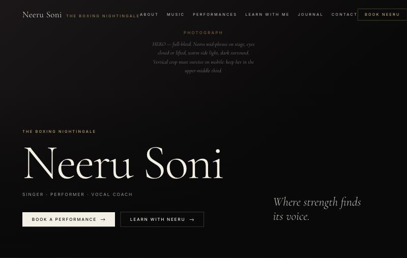

Selected work / AI-built website
Homepage for Neeru Soni
A homepage design I built with Claude for my mother, Neeru Soni, a singer, performer and vocal coach whose brand is The Boxing Nightingale: one continuous editorial page whose chapters are marked by the seven swaras (notes) of Indian classical music.
- My role
- Brief, direction, review
- Built with
- Claude (claude.ai artifacts)
- Period
- 28 Aug 2026
- Status
- Design prototype, not launched

What it is
A one-page homepage for my mother's music brand: performances, music, teaching and booking, laid out as one continuous editorial page rather than stacked blocks. It uses three free typefaces, including a Devanagari face for the Hindi touches, and links to her existing public profiles.
How it was made
I directed Claude through ten versions in a single day. The first was a scrollable preview. By the eighth it had become an editorial page with five backgrounds and very large display type, and the last versions organised the page around the seven swaras. I set the direction and judged each version; Claude wrote the code. Photo slots are left as clearly marked placeholders instead of stock images, so nothing on the page pretends to be her.
Status
A design prototype. It hasn't been launched, and the photographs and final copy are still to come.
Tools and credits
- Built with Claude (Anthropic) as a claude.ai artifact.
- Fonts: Cormorant Garamond, Inter and Tiro Devanagari Hindi (Google Fonts, open licences).
Status checked 20 Oct 2026. Version history from my claude.ai account: ten saved versions on 28 Aug 2026.